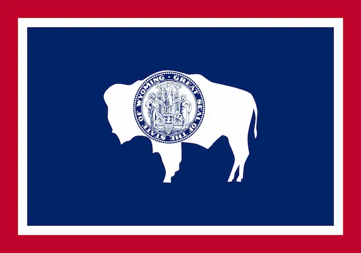
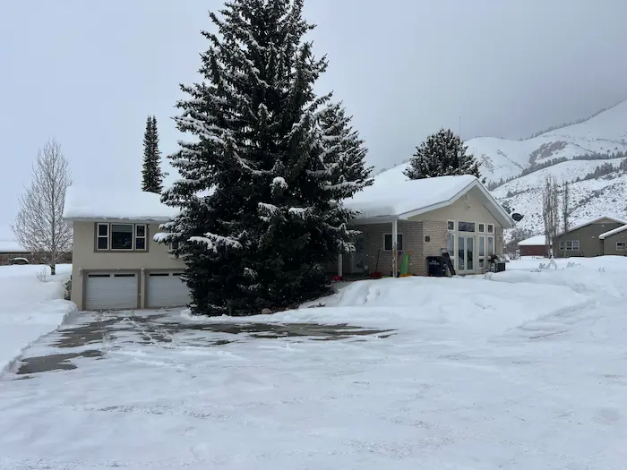

About Me

Howdy! My name is Paul A. Scherbel. I live in Star Valley, Wyoming. Our eight children are all grown and married and, as a result, we have 32 grandchildren. I serve as a Senior Service Missionary working with BYU Pathway. I became a student primarily to assist the students I work with better.
I served a mission in Italy from September 1966 to January 1969. In 2013 and 2014 my wife and I served in the town of Battipaglia which is in the Rome, Italy Mission. We also coordinated about 400 volunteers for the Rome Temple Open House and Dedication.
I worked for Avon Cosmetics, Inc. for 11 years mainly in warehouse automation then in sales management. I worked for Jafra Cosmetics, a subsidiary of The Gillete Corporation for 2 years as director of operations, then worked for Datalogic, Inc. an Italian electronics company where I served as General Manager of their factory in Erkenbrechtsweiler, Germany near Stuttgart.

More About Me
Top Photo: Wanted to see if my Tesla was any good off-road. Except for low clearance, it was amazing.
Middle Photo: Our home in the winter. Wyoming only has around 500,000 people. Least of all 50 states. Main reason: winter.
Bottom Photo: Wyoming governor's private jet. I served on our state's judicial nominating committee which interviews. prostective judges and sends 3 names to the governor to replace retiring judges. Was able to travel from Star Valley to Cheyenne in his jet a couple of times.